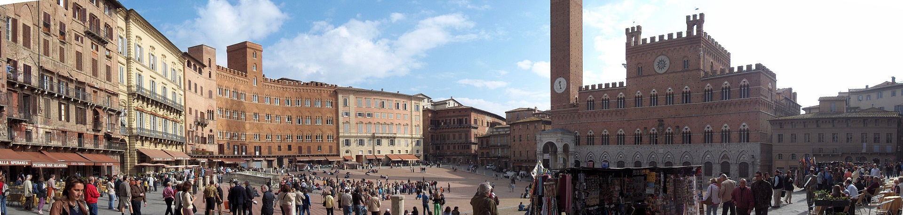

info e posizione
Piazza del Campo è la piazza principale della città di Siena. Unica per la sua particolare e ingegnosa forma a conchiglia, è rinomata in tutto il mondo per la sua bellezza e integrità architettonica, nonché per essere il luogo in cui due volte l'anno si svolge il Palio di Siena.
Storia e descrizione

La piazza sorge nel punto di intersezione delle tre colline su cui sorge la città, dove un tempo si trovava un'area di mercato. La sua pavimentazione in mattoni rossi disposti "a coltello" è divisa in nove spicchi, a ricordo del Governo dei Nove che guidò la città nel suo periodo di massimo splendore tra il 1287 e il 1355.
Sulla piazza si affacciano imponenti palazzi nobiliari e il maestoso Palazzo Pubblico, affiancato dalla Torre del Mangia, che con i suoi 88 metri domina l'intero profilo cittadino. Nella parte più alta della piazza si trova la Fonte Gaia, la più bella delle fonti senesi, decorata originariamente dalle sculture di Jacopo della Quercia.